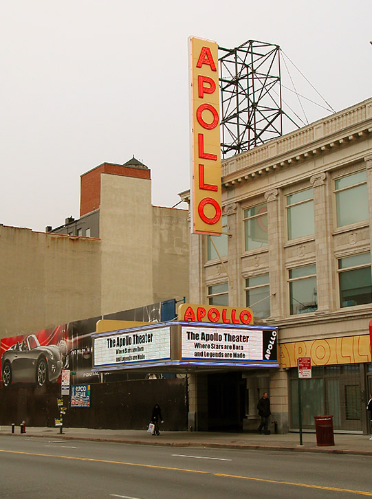
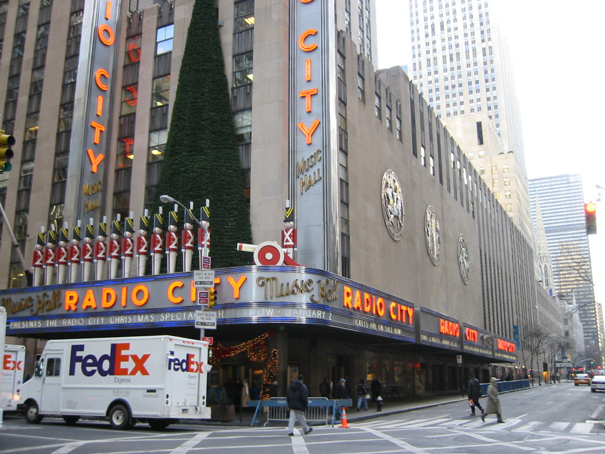
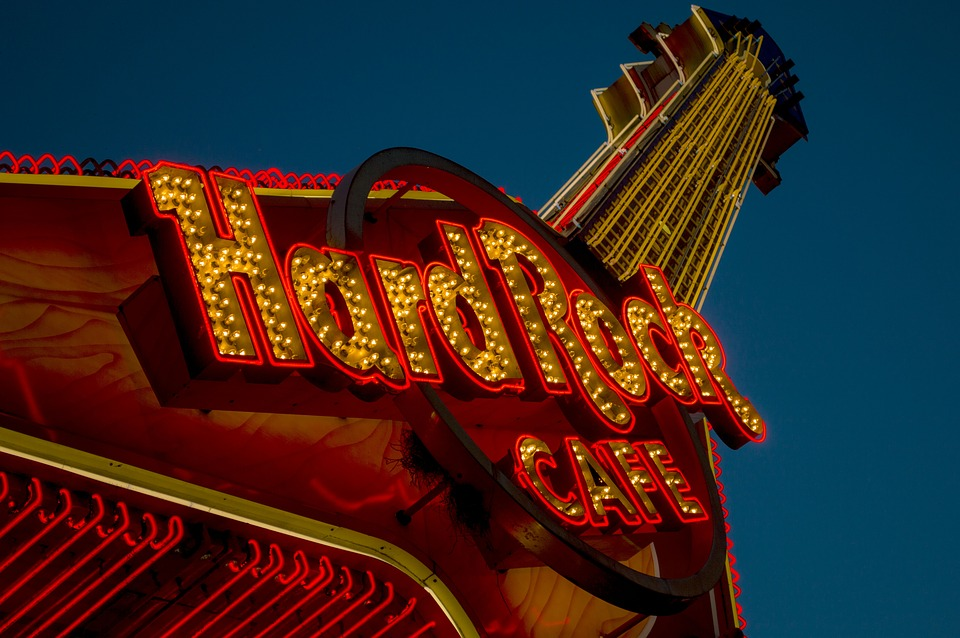
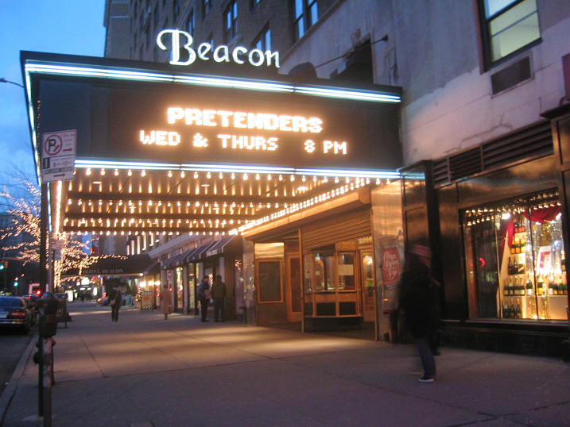
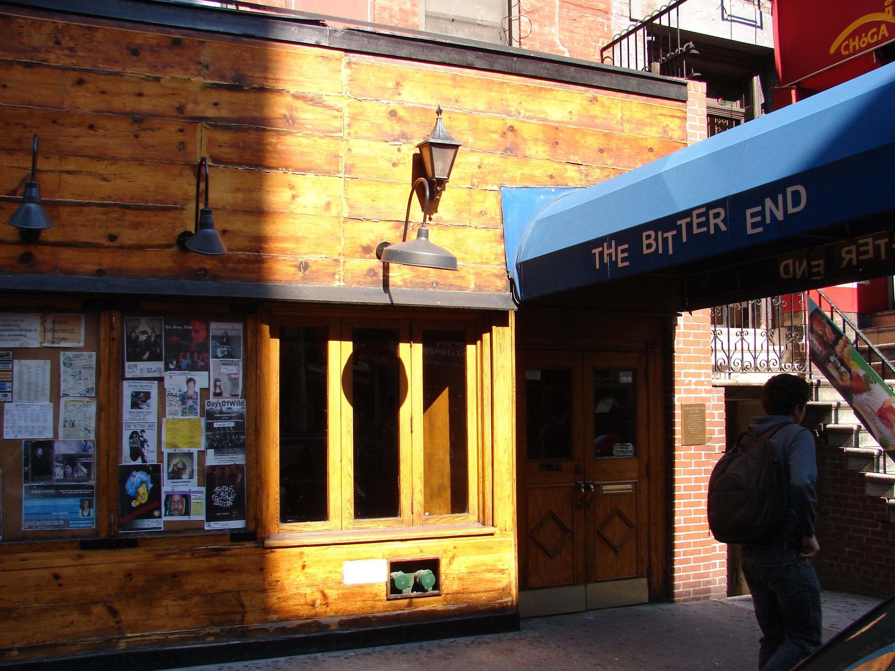

NYC Music Venues
You would be surprised to know where you can listen to music in NYC. Depending on what you like, you could find a place out there that will cater to your music taste. No matter what music genre you prefer, NYC is the perfect place for you.
 With both big and small venues all over, live music performances are easily accessible in NYC.
 Bigger venues, such as the Beacon Theater, Madison Square Garden, The Barclays Center, and the Apollo Theater, are well-known for hosting several big-named musical acts. Some of these venues may sound familiar, because they cater to a multitude of options when it comes to entertainment.
Below are a few links to some recommended music venues around New York City.